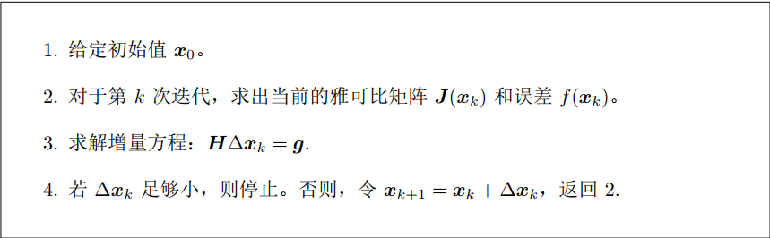
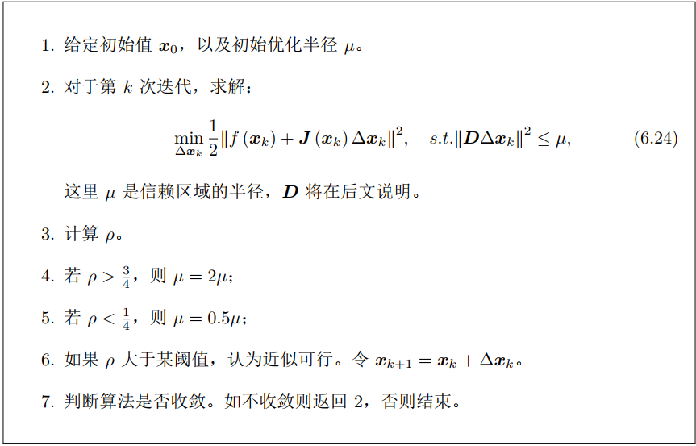
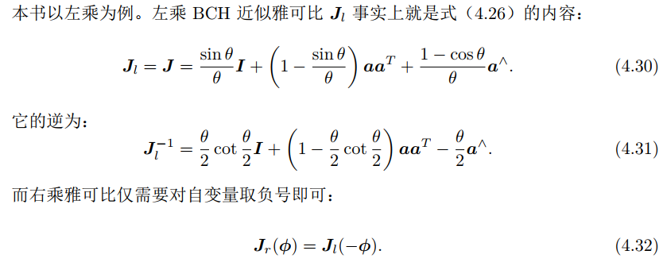
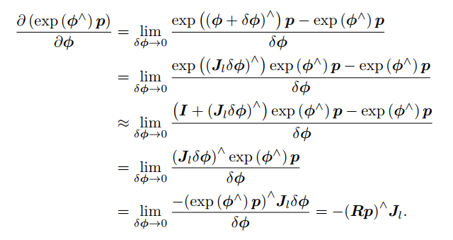
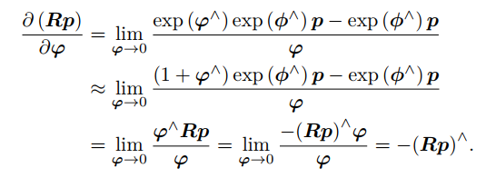
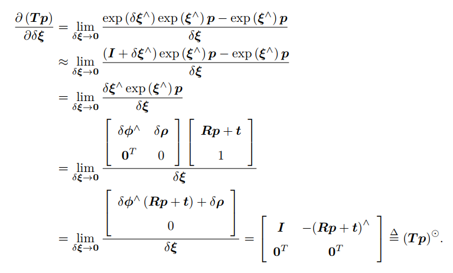
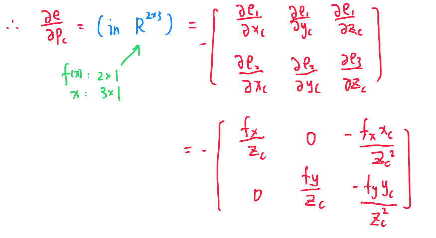
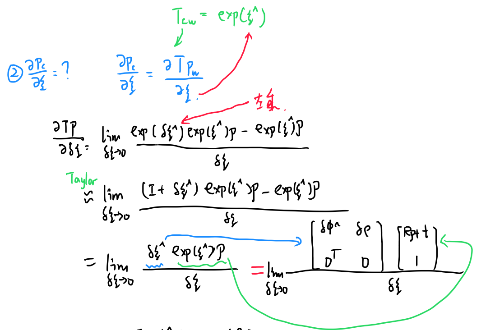
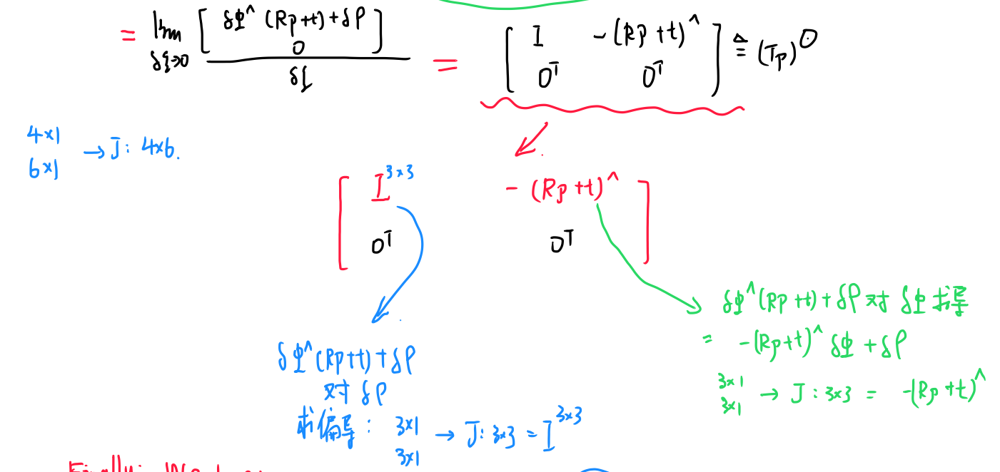
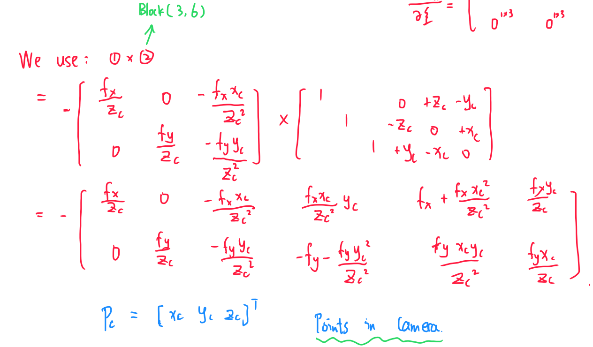

Nonlinear Optimazation and Bundle Adjustment
A.非线性优化
一、状态估计问题
1.1 最大后验与最大似然
经典SLAM模型由一个状态方程和一个运动方程构成，如下式所示： $$ \begin{cases} x_k=f(x_{k-1},u_k)+w_k\ z_{k,j}=h(y_j,x_k)+v_{k,j} \end{cases} $$ 由于运动方程在视觉SLAM中没有特殊性，目前不讨论，将观测方程具体化，由针孔相机成像原理得到： $$ sz_{k,j}=KTy_i $$ 其中，s为像素点的距离（真实点到相机坐标系的距离Z），K为相机内参，T为相机位姿矩阵，yi为相机观测到的路标点在世界坐标系下的坐标，z为在xk处观测y时对应的图像像素位置。
考虑噪声影响，假设两个噪声项wk、vkj满足零均值的高斯(正态)分布。在噪声的影响下，我们希望通过带噪声的数据z和u，推断位姿x和地图y（以及它们的概率分布），这构成了一个状态估计的问题。
状态变量：我们把所有待估计的变量放在一个“状态变量”中： $$ x={x_1,…,x_N,y_1,…,y_M} $$ 我们要解决的问题时是：已知输入数据（传感器读数）u和观测数据z（可以认为是像素位置）的条件下，计算状态x的条件概率分布： $$ P(x|z,u) $$ 我们考虑没有测量运动的传感器时，只有图像，那么就计算P(x|z)，利用贝叶斯公式，有 $$ P(x|z)=\frac{P(z|x)P(x)}{P(z)} $$ 直接求后验概率P(x|z)较为困难，但是求一个状态最优估计，使得在该状态下，后验概率最大化（Maximize a Posterior，MAP），则是可行的。 $$ x^*_{MAP}=argmaxP(x|z)=argmaxP(z|x)P(x) $$ 对公式中arg的解释：arg max是使后面式子达到最大值时变量的取值。例如：函数F(x，y)，arg max是指当F(x，y)取得最大值时，变量x，y的取值
在不知道先验概率P（x）的情况下，可以求解x 的最大似然估计。即在什么样的状态下，最可能产生现在观测到的数据。
1.2 最小二乘法的引出
根据公式含义： $$ z_{k,j}=h(y_j,x_k)+v_{k,j} $$ 上式表示，机器人在xk位置观测到路标yj，产生观测数据（像素）zkj，vkj为噪声，服从高斯分布。因此，我们可以得到观测数据的条件概率： $$ P(z_{j,k}|x_k,y_j)=N(h(y_j,x_k),Q_{k,j}) $$ N代表服从正态分布，可以看出，这还是一个高斯分布。为了计算使它最大化的xk，yj（极大似然估计），通常使用最小化负对数的方法。
任意高维高斯分布：x~N（μ，∑） $$ P(x)=\frac{1}{\sqrt{(2\pi)^N}det(\sum)}e^{-\frac{1}{2}(x-μ)^T\sum ^{-1}(x-μ)} $$ 其中，∑为相关系数，μ为均值。
取负对数后：前面系数与变量x无关，常数不管，只需要后面的二次型最小即可。可以使用无约束最优化求解（Newton、拟牛顿法、共轭梯度法、最速下降法）。
1.3 总结
首先，h（y，x）为定值，记为z0kj，但是由于噪声，观测值zkj与z0kj不一样。我们要求的是：在得到观测值z的情况下，x为和值的概率最大（例：z=(100,230)时，P（x=(1,2,3)^T）=0.95最大，那么认为x=(1,2,3)^T），即求P（x|z）。这个很不好求，因此使用贝叶斯公式转换，再极大似然估计，把x看作参数，观测位置为已知。现在变成求x为何值时，得到这个观测位置的概率最大，那么我们把这个x值认为位置，即求argmax(P（z|x）)，x为自变量。之后，这个最大似然估计的过程被转换为最小二乘问题。
二、非线性最小二乘法
最小二乘问题泛指具有如下形式的问题： $$ minf(x)=\frac{1}{2}\sum_{j=1}^{m}r_j^2(x) $$ 其中，m一般指实例个数，rj指残差，即目标值和预估值的差。
我们想得到
2.1 一阶梯度与二阶梯度法
求解增量最直观的方式是将目标函数在x附近进行泰勒展开： $$ ||f(x+Δx)||^2_2≈||f(x)||^2_2+J(x)Δx+\frac{1}{2}Δx^THΔx $$ 我们可以看出，只保留一阶导数时(J雅可比矩阵)，增量方向显然与梯度方向相反： $$ Δx^*=-J^T(x) $$ 而当保留二阶导数时，我们想得到增量Δx使得上式值最小，因此对Δx求导数并且使其为0，可以得到： $$ HΔx=-J^T $$ 第一种方法称为最速下降法，第二种方法称为牛顿法
2.2 Gauss-Newton法(只能处理最小二乘问题)
整体思想：将fx进行一阶泰勒展开： $$ f(x+Δx)≈f(x)+J(x)Δx $$ 这里J(x)时fx关于x的导数，我们用一阶泰勒展开式代替原来的函数，再用得到的函数进行最小二乘求解。我们对一阶展开的上式求最小值：求Δx使得||f(x+Δx)||^2达到最小： $$ Δx^*=argmin_{Δx}\frac{1}{2}||f(x)+J(x)Δx||^2 $$ 我们对Δx求导(不是对x求导)，先化简得到： $$ \frac{1}{2}||f(x)+J(x)Δx||^2\ =\frac{1}{2}(f(x)+J(x)Δx)^T(f(x)+J(x)Δx)\ =\frac{1}{2}(||f(x)||^2_2+2f(x)^TJ(x)Δx+Δx^TJ(x)^TΔx) $$ 对上式求导，并令导数为0： $$ 2J(x)^Tf(x)+2J(x)^TJ(x)Δx=0 $$ 我们可以看到，上式提供了Δx的方程： $$ H(x)Δx=g(x)\ 其中：H=J(x)^TJ(x)\ g=-J(x)^Tf(x) $$ 我们简化了牛顿法中计算Hesse矩阵的步骤，使用JTJ代替Hesse矩阵。因此，高斯牛顿法步骤如图：

2.3 Levenberg-Marquadt法（阻尼牛顿法）
根据泰勒公式，只有当Δx足够小的时候，近似等式才有较好的效果。因此，我们应该给Δx添加一个信赖区域(Trust Region)，不能让它太大而使得近似不准确。这种思想叫做：信赖区域方法(Trust Region Method)。在信赖区域中，我们认为近似有效；否则无效。
利用实际函数与近似函数的变化量的比值来确定信赖区域： $$ ρ=\frac{f(x+Δx)-f(x)}{J(x)Δx} $$ 分子为实际函数的增量Δf，分子为一阶泰勒近似增量(可见2.2)。比值越接近于1，说明近似效果越好；比值太小，则应减小信赖区域范围；比值太大，则可以放大信赖区域范围。

上面是一个约束最优化问题，我们使用Lagrange乘子将其转换为一个无约束优化问题： $$ Δx^*=argmin_{Δx}\frac{1}{2}||f(x)+J(x)Δx||^2+\frac{\lambda}{2}||DΔx||^2 $$ 类似高斯牛顿法展开，我们简单的得到： $$ (H+\lambda D^TD)Δx=g $$ 可解方程。如果我们把D取为单位矩阵，那么有： $$ (H+\lambda I)Δx=g $$ 当λ较大时，L-M法更接近于一阶梯度下降法；当λ较小时，L-M法更接近于高斯牛顿法。因此，LM法可以一定程度上避免线性方程组系数矩阵的奇异和病态问题。
三、举例说明
在这里，我们举一个简单的优化例子： $$ 利用该函数生成带噪声的数据：\ y=e^{ax^2+bx+c}+n\ 后利用数据估计a,b,c的值。这里假定正确答案为:a,b,c=1,2,1\ $$
1、理论分析
我们先进行分析，现在先构建误差函数，也就是目标函数： $$ e_i=y_i-e^{ax_i^2+bx_i+c}\ function:f(a,b,c)=\sum^i||e_i||^2_2 $$ 我们设： $$ e=[e_1,e_2,…,e_i]^T $$ 则目标函数可以表示为： $$ f(a,b,c)=e^Te $$ 在高斯牛顿法以及LM法中，目标函数表示为： $$ \frac{1}{2}||f(x)||^2_2 $$ 其中，fx可以是向量函数，即多维。所以可以将目标函数表示为： $$ \frac{1}{2}f(x)^Tf(x) $$ 这样，我们的e就与f对应起来了，GN法与LM法中，求的雅可比矩阵也是e的雅可比矩阵。e对待优化变量的雅可比矩阵维度为：[errorNum , optimizeNum]，其中，errorNum为误差项个数，optimizeNum为待优化变量个数。
2、matlab代码
clear;clc;close;
N=100;
a=1.0;b=2.0;c=1.0;
x=0.0:0.01:1-0.01;
sigma = 1.0;
y=exp(a.*x.*x+b.*x+c)+normrnd(0,sigma^2,1,100);
yt=exp(a.*x.*x+b.*x+c);
plot(x,y)
ai=6;bi=-10;ci=30;mu=1.0;
ComputeError(x,y,ai,bi,ci,N);
nerrorlist = [];
iter = 50;
for i = 1:iter
Jacobian=ComputeJacobian(x,y,ai,bi,ci,N);
Hessian = Jacobian'*Jacobian+mu*eye(3);
flast=f(ai,bi,ci,x);
error = ComputeError(x,y,ai,bi,ci,N);
nerrorlist=[nerrorlist,norm(error)];
b=-Jacobian'*error';
deltax=inv(Hessian)*b;
ai = ai+deltax(1);
bi=bi+deltax(2);
ci=ci+deltax(3);
rho = (f(ai,bi,ci,x)'-flast')./(Jacobian*deltax);
rhos = rho'*rho;
if rhos >0.75
mu = 0.5*mu;
elseif rhos<0.25
mu=2*mu;
end
end
plot(1:1:iter,nerrorlist)
error=ComputeError(x,yt,ai,bi,ci,N)
nerror=norm(error)
ai
bi
ci
function res=f(a,b,c,x)
res=exp(a.*x.*x+b.*x+c);
end
function J=ComputeJacobian(x,y,a,b,c,N)
J=zeros(N,3);
for i=1:N
J(i,1)=-x(i)*x(i)*exp(a.*x(i).*x(i)+b.*x(i)+c);
J(i,2)=-x(i)*exp(a.*x(i).*x(i)+b.*x(i)+c);
J(i,3)=-exp(a.*x(i).*x(i)+b.*x(i)+c);
end
end
function error=ComputeError(x,y,a,b,c,N)
d=y-exp(a.*x.*x+b.*x+c);
error = d;
end
B. Bundle Adjustment
一、李代数求导
1.1.1 BCH公式与近似形式
使用李代数的一大动机是为了进行优化，而在优化过程中导数是非常重要的信息。
Baker-Campbell-Hausdorff公式
A，B为矩阵，则有下式成立： $$ ln(exp(A)exp(B))\ =A+B+\frac{1}{2}[A,B]+\frac{1}{12}[A,[A,B]] -\frac{1}{12}[B,[A,B]]+… $$ 其中，[]为李括号。
BCH公式告诉我们：当处理两个矩阵指数的乘积时，它们会产生一些由李括号组成的余项。特别地，考虑SO(3)上的李代数ln(exp(Φ1^)exp(Φ2^))时，当Φ1或Φ2为小量时，小量二次以上的项都可以被忽略掉： $$ exp(ln(e^{\hat{\phi_1}}e^{\hat{\phi_2}}))≈ \begin{cases} J_l(Φ_2)^{-1}Φ_1+Φ_2 \ \ , \ \ if\ Φ_1\ is\ small\ J_r(Φ_1)^{-1}Φ_2+Φ_1 \ \ , \ \ if\ Φ_2\ is\ small\ \end{cases} $$ 以第一个近似为例，当对一个旋转矩阵R2左乘一个微小旋转矩阵R1时，可以看作在原有李代数Φ2上，加上了一个项，其中Jl为左乘，Jr为右乘。

BCH公式意义
假定对某个旋转R，对应的李代数为Φ。我们给它左乘微小旋转，记作ΔR，对应的李代数为ΔΦ。那么在李群中，得到的就是ΔR·R，而在李代数上，根据近似可以得到： $$ exp(Δ\hatΦ)exp(\hat{Φ})=exp((J_l(Φ)^{-1}ΔΦ+Φ\hat)) $$
1.1.2 SO(3)李代数上求导
假设机器人位姿为T，观察到了一个世界坐标位于p的点，产生观测数据z，根据变换关系： $$ z=Tp+w $$ 其中，w为噪声。我们计算误差e： $$ e=z-Tp $$ 我们求一个T使得整体误差最小化： $$ min_TJ(T)=\sum_{i=1}^N||z_i-Tp_i||^2 $$ 求解这个最小二乘法需要变换矩阵T的导数。方法在非线性优化中有讲解
1.1.3 李代数求导
我们考虑SO(3)上的情况。假设我们对一个空间点p进行了旋转，得到了Rp，现在我们要计算旋转之后点的坐标相对于旋转的导数： $$ \frac{d(exp(\hat{Φ})p)}{dΦ} $$ 这里d只是一个符号，并不是微分标识符
根据导数定义：

其中，第二行近似为BCH线性近似，第三行为泰勒展开舍去高次项后的近似，第四行与第五行将反对称符号视为叉乘（交换变号），最终约去小量δΦ，得到旋转后的点相对于李代数的导数： $$ \frac{d(Rp)}{dΦ}=(-Rp\hat)J_l $$
1.1.4 扰动模型(左乘)
由于4.3.3中导数的形式中含有Jl，这个Jl比较复杂，因此我们介绍扰动模型。
另一种求导方式：对R进行一次扰动ΔR，这个扰动可以乘在左边也可以乘在右边(结果会有微小差异)，此处以左扰动为例：
设左扰动ΔR对应的李代数为φ，对φ求导：

注：扰动相当于一个微小的Δx
1.1.5 SE(3)上的李代数求导
此处，给出SE(3)上的扰动模型。假设某空间点p经过一次变换T(ξ)，得到Tp。现在，给T左乘一个扰动ΔT=exp(δξ^)，我们设扰动项的李代数为：δξ=[δρ，δΦ]^T，那么有：

最终结果中的运算符可以把一个齐次坐标的空间点变换成一个4×6的矩阵。
二、BA中误差项的雅可比求解
先根据链式求导法则转换误差对李代数的导数。分解成了误差对相机坐标系下特征点的导数 和 相机坐标系下特征点对李代数的导数。其中，这个李代数就是相机位姿，即Tcw，可以把世界坐标系的点转换到相机坐标系下。
我们根据针孔相机模型可以得到e关于Pc的函数。其中K为相机内参。

求雅可比：这里误差是2维的，而求导项是3维的，雅可比是2×3维矩阵。求导规则根据简单偏导规则即可。

接下来，求Pc对ξ的导数。可以转化为蓝色字所示的公式，再根据李代数扰动求导法则，可以得到如下公式：最后对公式结果的解释也在图片中了


最后，把这两个结果相乘即可。

三、基于稀疏性的BA求解
Reference：
参考：
《视觉SLAM十四讲》——高翔